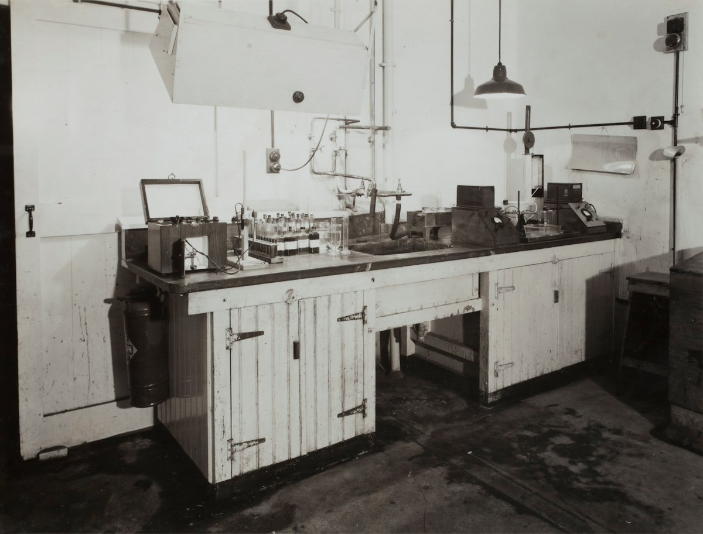

Grown Mars Walls Wait on a Reactor Nobody Has Flown
A November report pairs microbial cementation with surface nuclear power. The binding constraints are water and unattended time.

What the report actually claims
On November 23, 2026, phys.org ran a report on a proposal to build Mars habitats out of bacteria and nuclear power. The headline puts the finished structures on the planet before any astronaut lands. That sequencing is the argument. The microbes are the well-understood half. The reactor, the water and the schedule are the parts deciding whether the plan is a construction method or a thought experiment.
The mechanism is not exotic, and what follows is background from this desk rather than a claim from the report. Certain soil bacteria hydrolyze urea, raise the local pH and precipitate calcium carbonate around sand grains. Cementation follows. Earth crews have used that chemistry to bind loose soil. The supplied report names no organism, no growth medium and no rate.
The position this page takes: a grown habitat is a logistics problem wearing a biology costume. Someone has to keep a wet, warm, feeding culture running on a planet with no recovery crew. That culture needs electricity, and on Mars the honest source is a reactor, because dust keeps the surface dim. Power and time do the work the headline credits to bacteria.
Ready-made means years of unattended uptime
Ready-made, before the astronauts land. That is a schedule claim, and schedule claims are the ones Mars plans usually lose. Robotic precursors have slipped on every serious Mars campaign this desk has read, and the slip is rarely technical. It is funding and launch windows. A habitat grown by a machine left alone for years inherits both problems at once, and inherits them without a repair crew.
Growing a wall takes time in a way that packing one does not. A launch window delivers cans. A bioreactor delivers a slow chemical process that must hold a narrow band of temperature and moisture for every hour of the build. If the process is interrupted, the material does not pause politely. It stops.
The counter-reading is fair. Nuclear power is the kind of hardware that makes a slow biological process tolerable. A reactor does not care whether it is night or a dust season; it runs at rating. That converts a solar-and-battery operation, with its long quiet hours, into continuous uptime, and continuous uptime is the input a slow culture actually needs.
Water and heat share one budget
Microbial cementation is a wet process. The bacteria carry calcium and urea in solution, and water doubles as the transport medium. Water is also what a Mars site can least afford to spend on construction. Extracting it from hydrated minerals or buried ice costs energy and equipment. A reactor shrinks that cost, and the cost stays large.
Nothing in the supplied report quantifies this. No water mass per block, no recovery fraction, no loop for recycling the runoff. Those are the numbers a critic should ask for first. A run that leaves most of its water inside the wall is a different mission from one that recovers it. This desk could not confirm any of those figures.
Heat belongs in the same budget. Biomineralization works in a temperature band a human would find pleasant, and Mars surface temperatures do not stay there. Waste heat from a reactor is therefore an asset, and routing it is an engineering problem with real failure modes. Freeze a culture overnight and the season is gone. The supplied report is silent on thermal design, which narrows what it can be read as.
Nobody can go fix it
A robotic builder on Mars has no technician. Contamination, a clogged nozzle, a pump that freezes, a nutrient cartridge that ran out early: every one of those ends the run. Terrestrial microbial cementation is supervised, topped up and re-inoculated by field crews with trucks. The report's premise is that this loop survives translation into a machine nobody can reach on a trip measured in years.
No one arrives to fix it.
The radiation question sits behind all of it. Regolith shielding works, and a grown wall of cemented sand is thick by construction, which is its strongest argument against a launched metal shell. But the bacteria have to stay alive somewhere in that system, and a stored spore bank on a Mars deck is a component with a shelf life. The report offers no viability figure for that storage.
The best argument against the whole scheme
Say the honest objection plainly. Launch mass is the currency of Mars architecture, and shipping finished habitat volume beats shipping a factory that makes volume slowly. A pressurized shell launched intact needs no reactor, no water loop, no biology and no long stretch of unattended uptime. Every paragraph above is an attempt to answer a critic who starts exactly there.
The reply is mass per unit of protection rather than mass per unit of volume. Rock is cheap on the ground and ruinous in orbit. A wall grown from local sand buys thickness that a launched aluminum shell cannot afford, and thickness is what stops radiation and what stops micrometeoroids. The reactor is the cost of working with local material.
Even that framing loses to an inflatable buried under dumped regolith, and the proposal does not need to beat that option to matter. It has to beat it on interior quality. A grown shell can be shaped and thick in ways a loose bag of regolith cannot. This desk thinks that is where the fight belongs, and the supplied report does not make that argument.
What the grown material must survive
Pick up a paver from a landscaping supplier and the finished face is smooth while the core is gravel. A grown wall has no such layers. It is sand grains glued at their contacts, and all the strength sits in those contacts. A specimen that crushes well in a laboratory can still fail a wall built from the same mix. This desk has seen no test data for a Mars-grown block.
Then the Martian part: freeze-thaw cycles every sol, a hard vacuum that pulls water out of anything porous, and a regolith chemistry terrestrial crews rarely meet. Perchlorates in the dust are hostile to most Earth biology, and a process that digests local regolith invites that chemistry inside the reactor. Washing the feedstock costs water, which returns the argument to the section above.
None of this makes the proposal impossible. It makes it a systems problem with a living core, and systems problems get solved on paper long before they get solved in a test cell. The relevant history is that Martian resource use has been demonstrated at component level and never as an unattended plant. That gap is where a grown habitat stands or falls.
How to check this when the paper appears
A reader can run four checks when the underlying paper surfaces. The study should name an organism, a growth duration, a compressive strength and a water balance. Without the fourth, the proposal states no cost in what is likely the scarcest consumable at the site. The other three are ordinary materials reporting; the fourth decides the launch manifest.
None of that appears in the supplied item, and this desk will not pretend otherwise. Phys.org reprints; the substance lives in a journal and in an institutional release the lead does not name. Until those documents are public, the honest reading is that someone has drawn a plausible loop. Nobody has run it unattended, on a schedule, with the water counted. The first thing to wait for is a water balance in kilograms per square meter of wall.